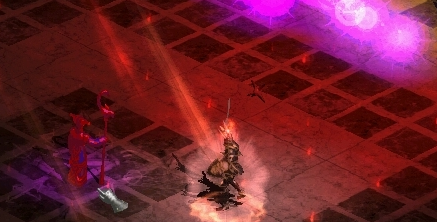

MEDIAN XL: ULTIMATIVE XVc (unfinished)
HTML Documentation v2.94

Release by Quirinus
HTML Documentation v2.94 for MXL: Ultimative XVc (unfinished), work in progress
This version should work well in most of the modern browsers.
Download
Or you can download the offline HTML version of the pervious documentation version here:
HTML Documentation v2.93 for MXL: Ultimative XIV-b.rar
Changes
v2.94 (unfinished, work in progress)
- Updated for versions XV and XVc. Credits to the whole documentation team (alphabetical order):
ItalianPower, korcola, manafire, MarcoNecroX, Quirinus, rishab, suchbalance.
- Set/TU/SU/SSU/SSSU colored items added. In the SU page, hover over the item stats to see the item picture/color. credits
- Added shields block chance. Since chance to block depends on character class, hover over the class% text to see the bonuses. credits
- Updated the Uberquest pictures with the pictures chosen as the best in the screenshot contest and a few more. credits
- Rewritten some Uberquest texts, renamed some and reordered them. credits
- Updated Skillpoint Planner. credits
- Added new sets/skills. credits
- Many new abbreviations. credits
- Fixed/added various things and item stats. credits
- Various cosmetic and code improvements. credits
- We finally have a GitHub repository for the documentation! Everyone can help edit now.
v2.93
- Updated with XIV-b changes.
- Added Strength/Dexterity Damage Bonus to weapons on the Base Items, TU, SU and Set pages.
Guys, it's not all about what their damage or speed is, it's also how well they scale.
- Ordered Amulets, Rings, Arrow Quivers, Bolt Quivers and Jewels by drop rarity. (bottom-right = most rare)
You'll finally know just how lucky you are. Or not.
- Condensed the item list on the Shrine Bonuses page and added a filter.
It still boggles my mind that it wasn't done like this from the start. So simple.
- Added Tier filter on TU page.
We know that all you care about is that Tier 6.
- Put Sets in 2 columns.
- Added Dogma names, acts, bosses and pictures.
I bet I'm not the only one who couldn't wrap his mind around which boss gives which dogma and did the wrong ones.
- Fixed Yshari set pieces drops to indicate the correct monsters they drop from. (korcola & pa5call)
- Fixed the Token names for Valkyrie's Prime bow and Laz charm upgrade. Added their pictures. (void)
- Added new maps to Quest Reference list and updated some old ones.
(Banned/Metalistas, korcola, Soponator, Azik, Zay, MarcoNecroX)
- Added more abbreviations. (SBS, BotSK, Empy, xBow, etc.)
- Tons of small changes, spelling mistakes and updated item stats. (thanks to... too many people to list)
- Some of the reported things still aren't changed, but will be in the next version.
v2.92
- Updated the Proc & Oskill lists with new elemental runeword names and changes.
- A few small changes on a dozen of pages and cosmetic upgrades to some tables.
v2.91
- Just a few small corrections, mostly for the Quest Reference list and Gift & Special Box page.
v2.9
- Added affix level calculator/filter for rare/crafted items on the prefix and suffix list, along with explanation for terms they use. Now it's easier for laymen to use and understand rare/crafted item affix selection.
Maybe now we can see them brag about an actually good craft in the screenshot topic, but I doubt it.
- Added a short and filterable quest reference list (uberquests, challenges, quests and misc.), some with maps. This is a complete rework of the old reference list, I hope it's up to par and helpful for newbies and others.
If not, I'll murder a dozen of kittens, take Greg's job, and close all yo' new topics with a hammer.
- Updated/upgraded the offline skillpoint planner for XI/XIII. I sent it to Tub to update the online version as well.
Maximum Skill Level no longer goes to 11. This goes to 13.
- Made Items with Oskills List from scratch, with all the current oskills and charged oskills.
Finally forced myself to learn regexp. You can find anything with it, even your lost keys. Look at this regexp for finding oskills, isn't it beautiful?
- Added Items with Procs List, in the same fashion as Oskills.
- Added cookies to remember open trees in navigation and the currently open page. Works online, but offline cookies don't work in Google Chrome & Opera (Blame them, it was their choice to disable cookies while offline, I can't do anything about it.) and Internet Explorer only remembers navigation.
No idea why, then again, who still uses IE – except Asians. I kiiiiid, I kiiiid. But they still do massively use IE.
- Updated/added XIII/XIV stuff. Paladin and other skills. The Void with some interesting secret details. Moved Uldyssian to Dungeon ubers. More below.
- Updated/corrected charm changes: The Sleep + Trophy exact stats, Cycles exact stats, Uldyssian's Sword, Diablo's Essence, Sigil of the 7 Deadly Sins and Rathma's Supremacy.
- Updated Gift Box, added Special Box (with recipes) and 'Blessed Lucky' recipe.
- Added armor looks page - it's under base items.
Some have asked for Amazon boobies - here you go.
- Added a lot of misc. feature descriptions and corrections to base items page.
Re-read EVERYTHING.
- Added shrine pictures/stat chances to recipes and shrine bonuses list. Enchanted Shrine and Shrine Vessel too.
Dooooong.
- Clarified/updated the availability of the monster list reanimates by noting reanimates from:
Hidden Shrine, 2 Rare/Crafting affixes, Atanna's Key SSU, upg. Harkon Crystal Gem, Soul of Kabraxis and Fool's Gold.
- Fixed SU special pictures and added missing.
The Ironbound Impact Tome wants to educate you about these changes by slamming knowledge into your head, once again.
- Added 60+ abbreviations.
Most important among them are, of course: Baba, Dudu and Soso. I was tempted to add Mama(-zon) and Papa(-din) – make it a reality, forum!
- Updated some item's stats.
Some of them are life-changing, like changing increased apple regen to replenish life.
- Shortened some navigation names and added minor improvements to the navigation. Navigation frame background is no longer white.
Yay for eyes!
- Various minor content improvements and additions.
- Various css/style/code improvements (like making item colors global and adding an icon).
There's still a long way to go, sigh.
Help
If you see anything that's incorrect, incomplete or ill-formatted, please help by posting it on the forum so it can be corrected in the next version! You might even get a cookie!
Thanks
I wish to thank everyone that contributed:
- MarcoNecroX and kambala for answers and facts
- everyone who posts new stuff (descriptions and pictures) on the forum, that aways helps me immensely
- aahz, WolfieeifloW, kambala, Soponator and everyone else who helped with the documentation at some point
- Tub for the skillpoint planner, and grig for his old pages
- the whole community for the support, reporting errors and suggestions!
- aahz for hosting the online and offline version of the documentation and Laz's MXL site
- Brother Laz and MarcoNecroX for the amazing mods and much more
- whist for help on some random things and for coding crazy stuff for Σ
- all the wonderful server hosts all around the world
- someone who I definitely forgot because there's a lot of people to thank <3
Previous version splash page.